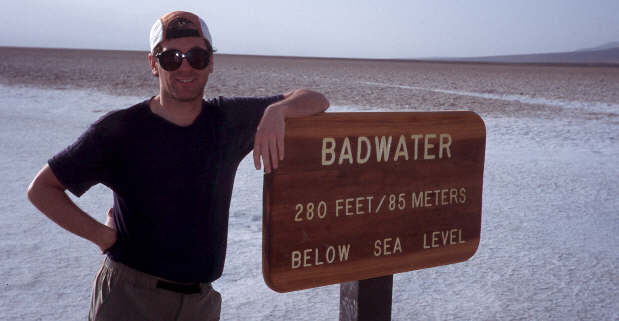

| 51 | 5/26-27 | Fortune Mt, Hawkins Mt w/DM, JP. Great campout, didn't quite make Hawkins. | |||||||||||||||||||||||||||||||||||||||||||||||||||||||||||||||||||||||||||||||||||||||||||||
|---|---|---|---|---|---|---|---|---|---|---|---|---|---|---|---|---|---|---|---|---|---|---|---|---|---|---|---|---|---|---|---|---|---|---|---|---|---|---|---|---|---|---|---|---|---|---|---|---|---|---|---|---|---|---|---|---|---|---|---|---|---|---|---|---|---|---|---|---|---|---|---|---|---|---|---|---|---|---|---|---|---|---|---|---|---|---|---|---|---|---|---|---|---|---|---|
| 50 | 5/25 | Frigid Mt w/DM, ususual summit, pecked a good peak | |||||||||||||||||||||||||||||||||||||||||||||||||||||||||||||||||||||||||||||||||||||||||||||
| 49 | 5/21 | Troublesome Cr w/KB. Perking up, fabulous forest | |||||||||||||||||||||||||||||||||||||||||||||||||||||||||||||||||||||||||||||||||||||||||||||
| 48 | 5/20 | Silver Creek w/KB. Tired and draggy but great day | |||||||||||||||||||||||||||||||||||||||||||||||||||||||||||||||||||||||||||||||||||||||||||||
| 47 | 5/19 | Persis/Index traverse w/DM, JP, JB. Exhausting but successful. | |||||||||||||||||||||||||||||||||||||||||||||||||||||||||||||||||||||||||||||||||||||||||||||
| 46 | 5/13 | Suiattle trail w/WTA, Forest Service. Sawin' logs | |||||||||||||||||||||||||||||||||||||||||||||||||||||||||||||||||||||||||||||||||||||||||||||
| 45 | 5/12 | Dirtyface (lower summit) w/DM, M. Great day! | |||||||||||||||||||||||||||||||||||||||||||||||||||||||||||||||||||||||||||||||||||||||||||||
| 44 | 5/6 | Humpback Mt w/KB, JP. Ran out of time | |||||||||||||||||||||||||||||||||||||||||||||||||||||||||||||||||||||||||||||||||||||||||||||
| 43 | 5/5 | Chutla Pk w/M, icy so did not summit | |||||||||||||||||||||||||||||||||||||||||||||||||||||||||||||||||||||||||||||||||||||||||||||
| 42 | 4/29 | Mt Persis w/KB, got out late, great day | |||||||||||||||||||||||||||||||||||||||||||||||||||||||||||||||||||||||||||||||||||||||||||||
| 41 | 4/28 | Helen Buttes w/M | |||||||||||||||||||||||||||||||||||||||||||||||||||||||||||||||||||||||||||||||||||||||||||||
| 40 | 4/27 | Tunnel Vision Pk w/DF, DC. Did not summit, avalanchy | |||||||||||||||||||||||||||||||||||||||||||||||||||||||||||||||||||||||||||||||||||||||||||||
| 39 | 4/22 | Higgins w/KB, rainy and yukky day | |||||||||||||||||||||||||||||||||||||||||||||||||||||||||||||||||||||||||||||||||||||||||||||
| 38 | 4/21 | Leavenworth rock w/M, scramble course | |||||||||||||||||||||||||||||||||||||||||||||||||||||||||||||||||||||||||||||||||||||||||||||
| 37 | 4/19 | Emerald Pools w/k | |||||||||||||||||||||||||||||||||||||||||||||||||||||||||||||||||||||||||||||||||||||||||||||
| 36 | 4/19 | Angels Landing w/k, P made it to summit! | |||||||||||||||||||||||||||||||||||||||||||||||||||||||||||||||||||||||||||||||||||||||||||||
| 35 | 4/19 | Weeping Rock w/k, Zion. Not that interesting. | |||||||||||||||||||||||||||||||||||||||||||||||||||||||||||||||||||||||||||||||||||||||||||||
| 34 | 4/18 | More 12 century ruins w/k, fascinating ruins | |||||||||||||||||||||||||||||||||||||||||||||||||||||||||||||||||||||||||||||||||||||||||||||
| 33 | 4/18 | 12 century ruins w/k, fascinating ruins | |||||||||||||||||||||||||||||||||||||||||||||||||||||||||||||||||||||||||||||||||||||||||||||
| 32 | 4/18 | Sunset Crater w/k, can't go up there any more | |||||||||||||||||||||||||||||||||||||||||||||||||||||||||||||||||||||||||||||||||||||||||||||
| 31 | 4/17 | Boynton Canyon w/k, colourful | |||||||||||||||||||||||||||||||||||||||||||||||||||||||||||||||||||||||||||||||||||||||||||||
| 30 | 4/17 | Montezuma's Castle w/k, fascinating ruins | |||||||||||||||||||||||||||||||||||||||||||||||||||||||||||||||||||||||||||||||||||||||||||||
| 29 | 4/16 | South Rim w/k, so-so sunset chasing | |||||||||||||||||||||||||||||||||||||||||||||||||||||||||||||||||||||||||||||||||||||||||||||
| 28 | 4/16 | Ooh Ah Point, Cedar Ridge w/k, superb views | |||||||||||||||||||||||||||||||||||||||||||||||||||||||||||||||||||||||||||||||||||||||||||||
| 27 | 4/16 | Geology Walk w/k, Grand Canyon south rim | |||||||||||||||||||||||||||||||||||||||||||||||||||||||||||||||||||||||||||||||||||||||||||||
| 26 | 4/15 | Badwater w/k, el -280 | |||||||||||||||||||||||||||||||||||||||||||||||||||||||||||||||||||||||||||||||||||||||||||||
| 25 | 4/15 | Cathedral Rock w/G | |||||||||||||||||||||||||||||||||||||||||||||||||||||||||||||||||||||||||||||||||||||||||||||
| 24 | 4/15 | Borax Mines, Death Valley
w/k
| 23
| 4/7
|
| Evergreen Mt
w/M. Great group!
| 22
| 4/1
| Dirtyface Lookout
w/DM. Don't ask why again! But gorgeous day. Great 59er shake too!
| 21
| 3/31
|
| Dirtyface Lookout
w/JB. Clouds prevented decent views. 59er shake!
| 20
| 3/25
| Mt McCausland
w/CS. Spectacular day but crummy, arduous, heavy wet snow conditions.
| 19
| 3/24
| ^
| Mutton Mt
w/JT,JB,DC. Dumb routefinding prevented us from Noble Knob.
| 18
| 3/17
| Round Mt
w/M. Round is such a superb route!
| 17
| 3/16
| ^
| Hex Mt
w/M.
| 16
| 3/4
| Windy Mt
w/CS. One of those incredible weekends! Route unpleasant in spots though.
| 15
| 3/3
| Thomas Mt, Baldy Mt
w/DC, JT. Superb day. Didn't use snowshoes.
| 14
| 3/2
| Lichtenwasser Lake
w/M,FB. Another superb day, gorgeous views
| 13
| 2/25
| Kendall Peak Lakes
w/KK. Superb day, perfect weather
| 12
| 2/24
| Cleveland Mt
w/BG,KB,JB,AC. Got to 3200' on wrong route, darn the luck.
| 11
| 2/23
| Mineral Butte
w/PP,DT et al. Very, very wet day
| 10
| 2/18
| ^
| Long Mt
w/LI et al. Steep 'lanchy summit but fun route
| 9
| 2/16-17
|
| Ethel Lake
w/DD,SM. Camping in the snow!
| 8
| 2/10
| ^
| Arrowhead Mt
w/BP,DC on darn nice day!
| 7
| 2/3
| ^^^^
| Flag Mt, Lion Rock, Table Mt, Nelson Hill
w/MT, great snow but snowmobiles mar day
| 6
| 2/2
| Mason Lake
w/KC, difficult snow day
| 5
| 1/28
|
| Talapus and Olallie Lakes
w/cw, sun at Olallie
| 4
| 1/20
| Cleveland Mt
w/M, bad routefinding and rain all day.
| 3
| 1/19
| Mildred Pt
w/M(JT), KC, perfect fluffy snow on a great day
| 2
| 1/13
| Mt Higgins
w/KC,FB,K, too steep for party but some good snow up high
| 1
| 1/6
| Captain Pt w/DS, MH
| |
Send a comment | Back to home page.